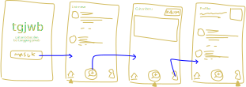

## Intro
Melalui artikel ini kita akan melihat bagaimana sebuah teknologi informasi kekinian berbasis *client-server* dibuat. Kita akan membuat sebuah aplikasi sangat sederhana seperti Twitter dimana pengguna dapat mengirim, melihat, dan membalas cuitan, serta dapat saling mengikuti akun. Proses pembangunan teknkologi informasi secara umum mengikuti Software Development Life Cycle (SDLC) yang terdiri atas tahapan:

 ## Analysis: User Story
Pada tahap ini kita mengeksplorasi kebutuhan prioritas dari para pengguna untuk kita wujudkan sebagai fitur pada sistem atau aplikasi yang akan dibuat.
User story [[1]](https://www.mountaingoatsoftware.com/agile/user-stories) memudahkan kita membuat prioritas fitur-fitur untuk dikerjakan untuk jangka waktu tertentu.
|Sebagai|Saya ingin bisa|Sehingga|Prioritas
|---|---|---|---|
|Pengguna|Mengirim cuitan|Bisa mengekspresikan pikiran saya|⭐⭐⭐⭐⭐|
|Pengguna|Melihat cuitan yang saya buat|Bisa mengingatkan, mengevaluasi dan mengambil hikmah|⭐⭐⭐⭐⭐|
|Pengguna|Mencari pengguna lain|Memudahkan mengakses cuitan pengguna tersebut|⭐⭐⭐⭐|
|Pengguna|Melihat cuitan dari pengguna lain|Bisa mengambil hikmah dan inspirasi|⭐⭐⭐⭐|
|Pengguna|Membalas cuitan diri sendiri ataupun pengguna lain|Bisa memberi respon|⭐⭐⭐⭐⭐|
|Pengguna|Mengikuti pengguna lain|Memudahkan mencari pengguna tersebut|⭐⭐⭐|
## Analysis: Struktur Data
## Analysis: User Story
Pada tahap ini kita mengeksplorasi kebutuhan prioritas dari para pengguna untuk kita wujudkan sebagai fitur pada sistem atau aplikasi yang akan dibuat.
User story [[1]](https://www.mountaingoatsoftware.com/agile/user-stories) memudahkan kita membuat prioritas fitur-fitur untuk dikerjakan untuk jangka waktu tertentu.
|Sebagai|Saya ingin bisa|Sehingga|Prioritas
|---|---|---|---|
|Pengguna|Mengirim cuitan|Bisa mengekspresikan pikiran saya|⭐⭐⭐⭐⭐|
|Pengguna|Melihat cuitan yang saya buat|Bisa mengingatkan, mengevaluasi dan mengambil hikmah|⭐⭐⭐⭐⭐|
|Pengguna|Mencari pengguna lain|Memudahkan mengakses cuitan pengguna tersebut|⭐⭐⭐⭐|
|Pengguna|Melihat cuitan dari pengguna lain|Bisa mengambil hikmah dan inspirasi|⭐⭐⭐⭐|
|Pengguna|Membalas cuitan diri sendiri ataupun pengguna lain|Bisa memberi respon|⭐⭐⭐⭐⭐|
|Pengguna|Mengikuti pengguna lain|Memudahkan mencari pengguna tersebut|⭐⭐⭐|
## Analysis: Struktur Data
graph TD A[üê¨ Analisis] --> B[ü¶â Design] B --> C[üêú Development] C --> D[üêí Testing] D --> E[üêã Deployment] E --> F[üêù Maintenance] click A href "https://devoxsoftware.com/blog/software-development-lifecycle/" _blank## Analysis: *Branding* Pada tahap ini kita mengeksplorasi *branding* dari sistem yang dibuat. *Branding* meliputi: - Merk: **tgjwb** - Tagline: cuitan bebas dan bertanggung jawab - Campaign: Bagaimana membuat aplikasi yang membuat penggunanya senang berbagi imajinasi, fakta, maupun inspirasi secara bertanggung jawab - Target user: - Usia 7+ - Seorang yang senang berbagi inspirasi dan informasi baru - Seorang yang senang mengeksplorasi inspirasi dan informasi baru - Seorang yang ingin atau sudah memiliki sikap bertanggung jawab - Seorang yang ingin media cuitan alternatif yang lebih sehat - User experience theme: - Mudah - Sederhana - Menyenangkan - Warna: ala suasana pagi / light blue / light yellow - Inspirasi desain: -
## Analysis: User Story
Pada tahap ini kita mengeksplorasi kebutuhan prioritas dari para pengguna untuk kita wujudkan sebagai fitur pada sistem atau aplikasi yang akan dibuat.
User story [[1]](https://www.mountaingoatsoftware.com/agile/user-stories) memudahkan kita membuat prioritas fitur-fitur untuk dikerjakan untuk jangka waktu tertentu.
|Sebagai|Saya ingin bisa|Sehingga|Prioritas
|---|---|---|---|
|Pengguna|Mengirim cuitan|Bisa mengekspresikan pikiran saya|⭐⭐⭐⭐⭐|
|Pengguna|Melihat cuitan yang saya buat|Bisa mengingatkan, mengevaluasi dan mengambil hikmah|⭐⭐⭐⭐⭐|
|Pengguna|Mencari pengguna lain|Memudahkan mengakses cuitan pengguna tersebut|⭐⭐⭐⭐|
|Pengguna|Melihat cuitan dari pengguna lain|Bisa mengambil hikmah dan inspirasi|⭐⭐⭐⭐|
|Pengguna|Membalas cuitan diri sendiri ataupun pengguna lain|Bisa memberi respon|⭐⭐⭐⭐⭐|
|Pengguna|Mengikuti pengguna lain|Memudahkan mencari pengguna tersebut|⭐⭐⭐|
## Analysis: Struktur Data
erDiagram
PENGGUNA {
int id_pengguna
string username
string email
string password
string nama_lengkap
}
PENGGUNA ||--o{ CUITAN : membuat
CUITAN ||--o{ CUITAN : membalas
CUITAN {
int id_cuitan
int id_cuitan_yang_dibalas
int id_pengguna
string isi_cuitan
datetime waktu_publikasi
}
PENGGUNA ||--o{ PENGIKUT : memiliki
PENGGUNA ||--o{ PENGIKUT : mengikuti
PENGIKUT {
int id_pengguna
int id_pengguna_yang_mengikuti
}
- Pada tahap ini kita mengeksplorasi dan menganalisis bentuk struktur data yang mampu memfasilitasi *user story* yang ada, maupun yang kemungkinan besar dibutuhkan di kemudian hari
- Kita akan merepresentasikan Entitas pada aplikasi dalam bentuk tabel Entitas dan Atribut
## Design: Arsitektur Berbasis Client-Server
flowchart BT
subgraph cloud
B[Web Server: JavaScript - Express.js] <--> C[Aplikasi Web Backend: JavaScript - Express.js]
C <--> D[Database: PostgreSQL]
end
A[Aplikasi Android & iPhone: JavaScript - React Native] <--> B
Pada tahap ini kita merancang arsitektur berikut teknologi yang terdapat pada setiap komponen pembentuk aplikasi.
## Design: User Experience (UX) Design

- Pada tahap ini kita mengeksplorasi alur interaksi pengguna yang paling praktis dan efektif untuk setiap fitur.
- Ada banyak tools yang bisa digunakan mulai dari yang open source seperti [**Inkscape** (yang saya gunakan)](https://inkscape.org/), Penpot, lalu yang gratis hingga berbayar seperti Figma.
- Desain yang dibuat di atas adalah *low fidelity design* dimana kualitas desainnya paling sederhana tapi cepat untuk dibuat.